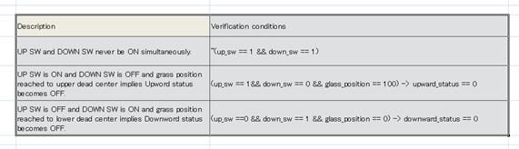
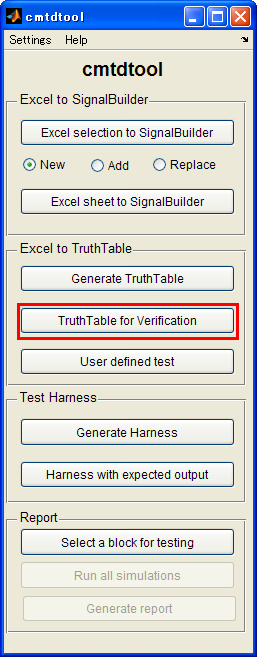
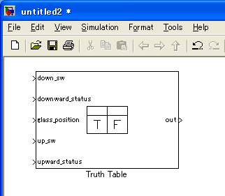
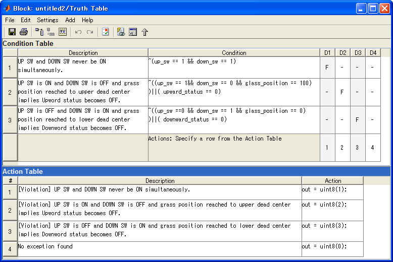
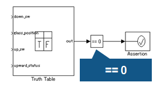
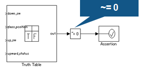
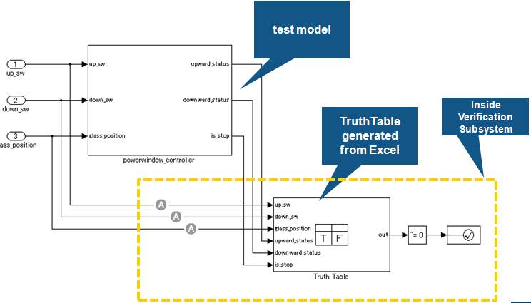

Generate TruthTable for assertion verification
- Supported by MATLAB R2007a or later
- Requires Simulink® and Stateflow®.
Contents
Overview
(1) Select a region of Excel sheet which describes a list of assertion equations in a textual format.

(2) Click TruthTable for Verification to import that equations into Simulink.

(3) A TruthTable block will be created.

(4) The assertion equations are represented by Stateflow's TruthTable block's format. An operator -> is automatically converted to the same logic, e.g. A->B becomes ~(A)||(B).

Rules for writing TruthTable for assertion verification
- 1st column "Description": Used as comments in the model. Do not affect for simulation.
- 2nd column "Verification conditions": Specify conditions corresponding to the 1st column. You can write MATLAB equation including arithmetic operator, logical operator, relational operator, and so on. You can use "implies" operator with "->". The A -> B is simply replaced by ~A || B.
Note
- There are no operators enable you to use temporal logics. If you want to deal with temporal logics, please define the logics outside of TruthTable block by using such as Unit Delay or Stateflow
Violation oriented pattern description
List conditions that should not cause a violation (No violation means normal.)

Normal oriented pattern description
List all conditions of normal behavior. (A condition not listed means a violation.)

Expected model structure

How to run
- Open cmtdtool_sampledata_en.xls
- Select "E7:F10" cell in "VerificationTruthTable" tab.
- Click "TruthTable for Verification" button in cmtdtool GUI.
- Check that there is Truth Table in a new model.
- Run the following commands and you will see that the same operation can be done by API call .
xls2VerificationTruthTable('cmtdtool_sampledata_en.xls','VerificationTruthTable','E7:F10');